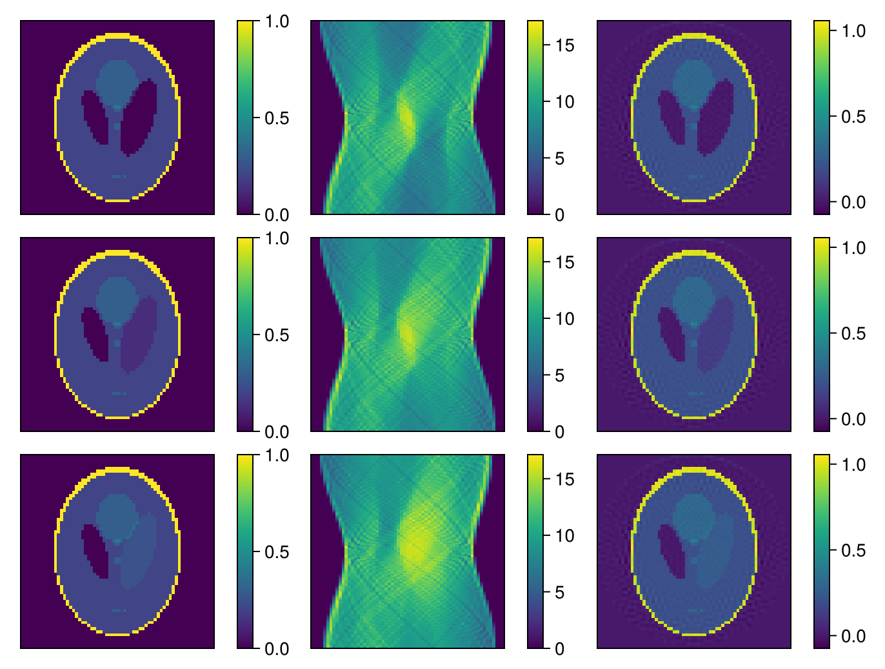

Distributed Image Reconstruction using RecoPlans
This example demonstrates how to configure an iterative reconstruction algorithm directly on a worker, which helps to avoid transferring large parameters between processes and allows access to resources that may only exist on a specific worker.
We follow a similar procedure as with the algorithm interface, but we will not configure the parameters just yet.
pre = RecoPlan(RadonPreprocessingParameters)
iter_reco = RecoPlan(IterativeRadonReconstructionParameters)
params = RecoPlan(IterativeRadonParameters; pre = pre, reco = iter_reco)
plan_iter = RecoPlan(IterativeRadonAlgorithm, parameter = params)RecoPlan{Main.OurRadonReco.IterativeRadonAlgorithm}
└─ parameter::RecoPlan{Main.OurRadonReco.IterativeRadonParameters}
├─ reco::RecoPlan{Main.OurRadonReco.IterativeRadonReconstructionParameters}
│ ├─ iterations
│ ├─ solver
│ ├─ reg
│ ├─ eltype
│ ├─ angles
│ └─ shape
└─ pre::RecoPlan{Main.OurRadonReco.RadonPreprocessingParameters}
├─ numAverages
└─ frames
We can traverse the parameters of our algorithm and configure them locally:
plan_iter.parameter.pre.frames = collect(1:3)3-element Vector{Int64}:
1
2
3To transfer the plan to the worker process, we will use DaggerReconstructionParameter and DaggerReconstructionAlgorithm as a RecoPlan:
params_dagger = RecoPlan(DaggerReconstructionParameter; worker = worker, algo = plan_iter)
plan_dagger = RecoPlan(DaggerReconstructionAlgorithm; parameter = params_dagger)RecoPlan{DaggerReconstructionAlgorithm}
└─ parameter::RecoPlan{DaggerReconstructionParameter}
└─ algo::RecoPlan{Main.OurRadonReco.IterativeRadonAlgorithm} [Distributed, Worker 1]
└─ parameter::RecoPlan{Main.OurRadonReco.IterativeRadonParameters}
├─ reco::RecoPlan{Main.OurRadonReco.IterativeRadonReconstructionParameters}
│ ├─ iterations
│ ├─ solver
│ ├─ reg
│ ├─ eltype
│ ├─ angles
│ └─ shape
└─ pre::RecoPlan{Main.OurRadonReco.RadonPreprocessingParameters}
├─ numAverages
└─ frames = [1, 2, 3]
In this setup, only the DaggerReconstructionParameter and DaggerReconstructionAlgorithm exist on the local worker; all other RecoPlans reside on the chosen worker. When traversing the RecoPlan tree across workers, we receive a DaggerRecoPlan instead of the usual data type:
typeof(plan_dagger.parameter.algo)
#This ephemeral structure manages communication with its remote `RecoPlan` counterpart, allowing us to use the same interface as if the entire plan were local.
plan_dagger.parameter.algo.parameter.reco.solver = CGNR
dict = Dict{Symbol, Any}()
dict[:shape] = size(images)[1:3]
dict[:angles] = angles
dict[:iterations] = 20
dict[:reg] = [L2Regularization(0.001)]
dict[:solver] = CGNR
setAll!(plan_dagger, dict)To configure the algorithm with resources only available on the worker, such as files or GPU data, we can use the following interface:
setproperty!(plan_dagger.parameter.algo.parameter.reco, :angles) do
angles[1:2:end]
end
length(plan_dagger.parameter.algo.parameter.reco.angles) == length(1:2:length(angles))trueThe provided function is evaluated solely on the remote worker.
Once the algorithm is fully configured, we can build and use it as usual:
setAll!(plan_dagger, dict)
imag_dagger = reconstruct(build(plan_dagger), sinograms)
fig = Figure()
for i = 1:3
plot_image(fig[i,1], reverse(images[:, :, 24, i]))
plot_image(fig[i,2], sinograms[:, :, 24, i])
plot_image(fig[i,3], reverse(imag_dagger[:, :, 24, i]))
end
resize_to_layout!(fig)
fig
Serialization
The serialization process of DaggerReconstructionAlgorithm and DaggerReconstructionParameter ignores the worker parameter and retrieves the entire plan tree:
setAll!(plan_dagger, :reg, missing)
setAll!(plan_dagger, :angles, missing)
savePlan(stdout, plan_dagger)_module = "DaggerImageReconstruction"
_type = "RecoPlan{DaggerReconstructionAlgorithm}"
[parameter]
_module = "DaggerImageReconstruction"
_type = "RecoPlan{DaggerReconstructionParameter}"
[parameter.algo]
_module = "Main.OurRadonReco"
_type = "RecoPlan{IterativeRadonAlgorithm}"
[parameter.algo.parameter]
_module = "Main.OurRadonReco"
_type = "RecoPlan{IterativeRadonParameters}"
[parameter.algo.parameter.reco]
iterations = 20
shape = [64, 64, 64]
_module = "Main.OurRadonReco"
_type = "RecoPlan{IterativeRadonReconstructionParameters}"
[parameter.algo.parameter.reco.solver]
_module = "RegularizedLeastSquares"
_type = "Type"
_value = "CGNR"
[parameter.algo.parameter.pre]
frames = [1, 2, 3]
_module = "Main.OurRadonReco"
_type = "RecoPlan{RadonPreprocessingParameters}"It is also possible to directly load and distribute a serialized plan from a file using loadDaggerPlan:
clear!(plan_iter)
io = IOBuffer()
savePlan(io, plan_iter)
seekstart(io)
loadDaggerPlan(io, [OurRadonReco]; worker = worker)RecoPlan{DaggerReconstructionAlgorithm}
└─ parameter::RecoPlan{DaggerReconstructionParameter}
└─ algo::RecoPlan{Main.OurRadonReco.IterativeRadonAlgorithm} [Distributed, Worker 1]
└─ parameter::RecoPlan{Main.OurRadonReco.IterativeRadonParameters}
├─ reco::RecoPlan{Main.OurRadonReco.IterativeRadonReconstructionParameters}
│ ├─ iterations
│ ├─ solver
│ ├─ reg
│ ├─ eltype
│ ├─ angles
│ └─ shape
└─ pre::RecoPlan{Main.OurRadonReco.RadonPreprocessingParameters}
├─ numAverages
└─ frames
This automatically wraps everything in a DaggerReconstructionAlgorithm.
Observables
RecoPlans can attach callbacks to property value changes using Observables from Observables.jl. If a RecoPlan is set up with listeners and then moved to a different worker, the plans execute within that worker. This functionality also applies to the loadDaggerPlan method mentioned earlier.
Additionally, listeners can be attached across workers using the Observable interface on a DaggerRecoPlan:
using AbstractImageReconstruction.Observables
localVariable = 3
plan_iter_remote = plan_dagger.parameter.algo
fun = on(plan_iter_remote.parameter.pre, :frames) do newval
@info "Number of frames was updated to: $(length(newval))"
localVariable = length(newval)
end
setAll!(plan_iter_remote, :frames, collect(1:42))[ Info: Number of frames was updated to: 42Note: We retain the observable function in the variable fun to allow for later removal of the listener. The anonymous function cannot be used directly due to internal listener management in DaggerImageReconstruction.
off(plan_iter_remote.parameter.pre, :frames, fun)
setAll!(plan_iter_remote, :frames, collect(1:32))Since the listener executes on the local worker, updated data must be transferred between workers. If this involves large data, a preprocessing function can be provided to the Observable:
fun = on(plan_iter_remote.parameter.pre, :frames; preprocessing = length) do newval
@info "Number of frames was updated to: $(newval)"
localVariable = newval
end
setAll!(plan_iter_remote, :frames, collect(1:42))[ Info: Number of frames was updated to: 42This page was generated using Literate.jl.